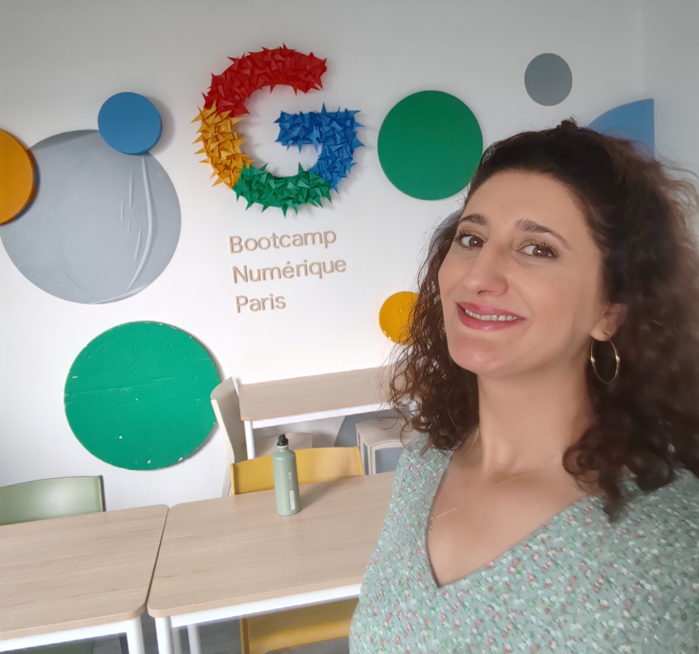
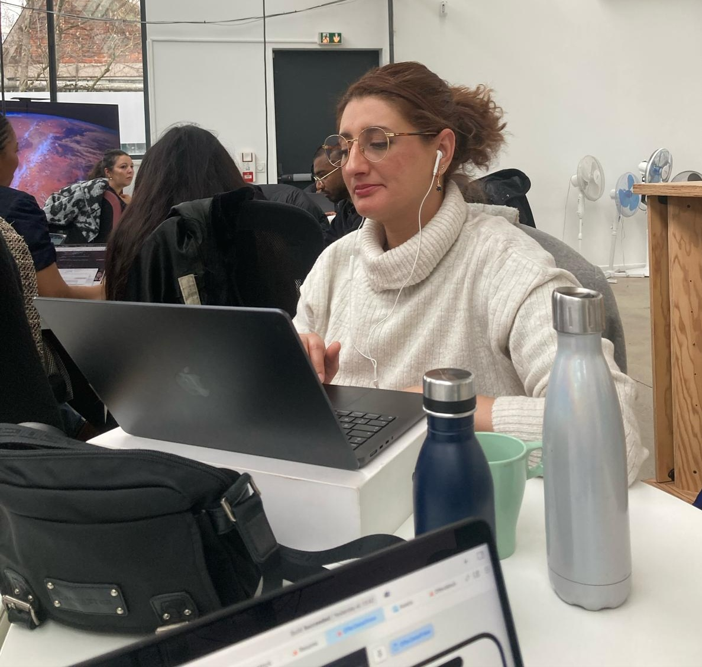
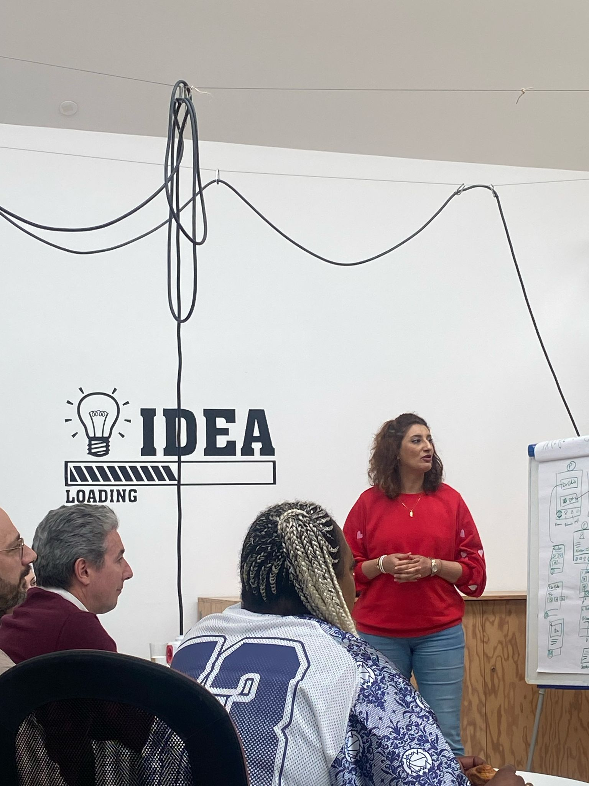

Khedidja Chaabane
Marketing digital · Tracking & Analytics · Développement web
Mon parcours professionnel est avant tout une histoire d'évolution, de curiosité et d'apprentissage.
J'ai construit mon expérience à travers plusieurs univers professionnels, de l'administration et des ressources humaines au développement informatique, puis au marketing digital, au tracking et à l'analyse des données.
Un parcours construit étape par étape
J'ai commencé ma carrière au sein du Ministère de la Défense nationale en Algérie, où j'ai évolué pendant plusieurs années dans des fonctions liées à la gestion administrative, aux ressources humaines, à la coordination et à la formation.
Cette première expérience m'a permis de développer des compétences qui me servent encore aujourd'hui : le sens de l'organisation, la rigueur, la gestion des priorités, la communication, la coordination et le travail en équipe.
Mais parallèlement à cette carrière, j'ai toujours été attirée par l'informatique et les nouvelles technologies. Je cherchais à comprendre comment fonctionnaient les outils que j'utilisais et je profitais des occasions qui se présentaient pour apprendre et développer mes compétences dans ce domaine.


Une curiosité devenue un véritable projet professionnel
Après mon installation en France, j'ai choisi de donner une place plus importante à cette passion pour l'informatique. J'ai entrepris plusieurs formations et multiplié les projets afin de transformer progressivement mes connaissances en compétences professionnelles.
Entre 2022 et 2025, j'ai ainsi développé mon expérience dans le développement web à travers différents projets et environnements. J'ai travaillé sur des interfaces web, des applications dynamiques, des projets Symfony et WordPress, ainsi que sur des projets associatifs.
J'ai également élargi mon expérience au développement mobile avec un projet iOS réalisé en équipe. Cette diversité de projets m'a appris à m'adapter à différents environnements, technologies et méthodes de travail.
Apprendre, expérimenter et aller plus loin
Je n'ai jamais considéré une formation comme une finalité. Pour moi, apprendre signifie surtout pouvoir mettre rapidement les connaissances acquises en pratique.
C'est dans cette logique que j'ai continué à explorer différents domaines du numérique, notamment le développement d'applications, la data et, plus récemment, le marketing digital.
Le développement mobile iOS m'a notamment permis de travailler en équipe sur la conception et le développement d'une application de CV anonyme avec SwiftUI, depuis la réflexion autour du concept jusqu'à la présentation du prototype fonctionnel.


Une nouvelle étape dans mon aventure professionnelle
Mon parcours m'a ensuite conduite vers le marketing digital, un domaine qui réunit plusieurs aspects que j'apprécie : la technologie, la donnée, la compréhension des utilisateurs, l'analyse et la réflexion stratégique.
Dans le cadre de ma formation chez Oreegami et de mon expérience chez iProspect, j'ai développé de nouvelles compétences en marketing digital, tracking, analytics, reporting et gestion de projets.
Cette expérience m'a également permis de mieux comprendre le fonctionnement d'une agence et de travailler avec des équipes aux expertises complémentaires.
Aujourd'hui, je souhaite continuer à construire ce profil transversal, à la croisée du digital, de la technologie et de la donnée.
Ce qui guide ma façon de travailler
Curiosité
J'aime découvrir de nouveaux domaines, comprendre comment les choses fonctionnent et continuer à développer mes compétences.
Collaboration
Mes différentes expériences m'ont appris l'importance de l'écoute, de la communication et du partage des connaissances au sein d'une équipe.
Adaptabilité
Changer d'environnement, apprendre de nouvelles technologies ou relever un nouveau défi fait partie de mon parcours.
Aujourd'hui
Je recherche une nouvelle opportunité qui me permettra de mettre à profit mon expérience, ma polyvalence et ma curiosité, tout en continuant à apprendre et à évoluer au sein d'une équipe.
Découvrir mes réalisations